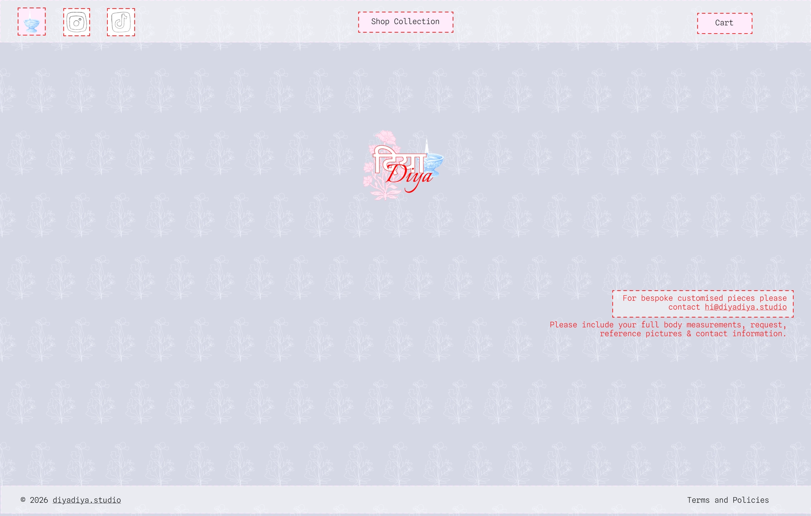
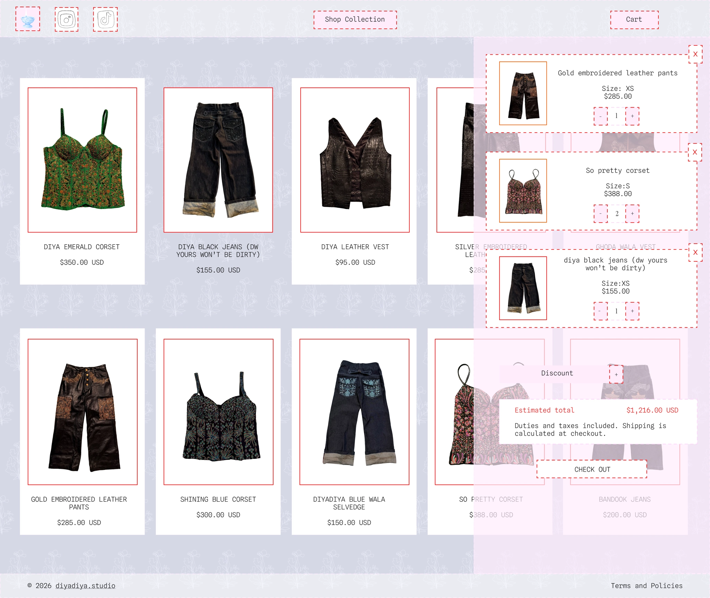
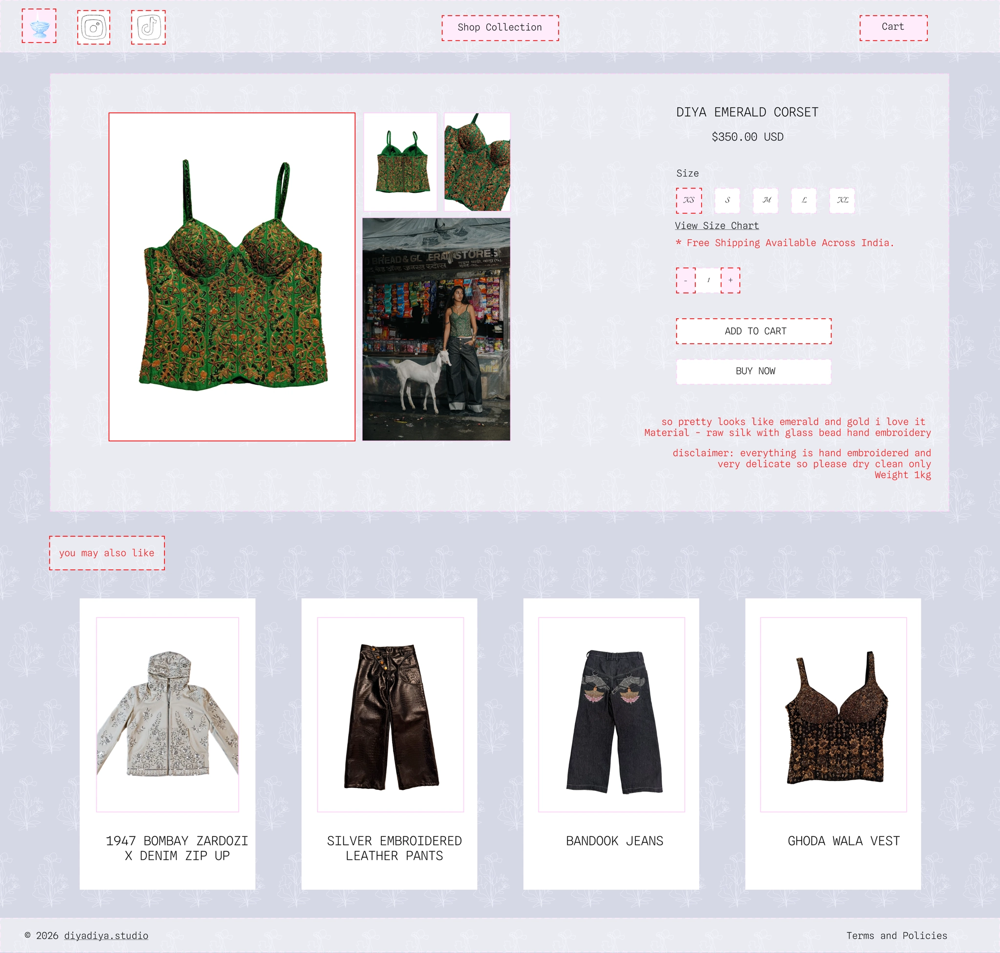
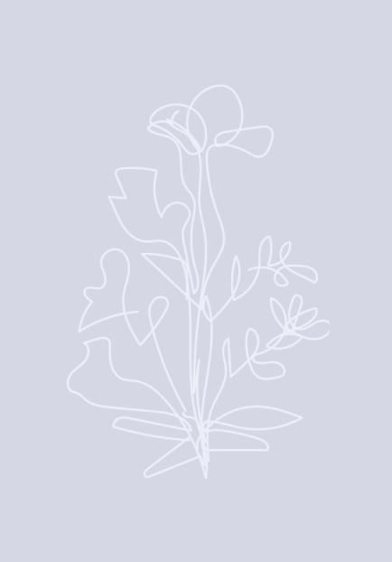
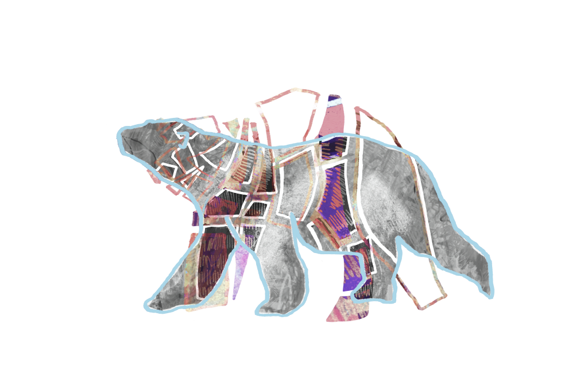

To be creative is to be curious
Design, BA @ UCLA
Selected Works
Motion Graphics & Visual Effects
“Uproar” by Lil Wayne
Choreography by Usha Jey
Visual Effects made using Adobe After Effects
Quintessentially New-York.
Choreography by Usha Jey
Visual Effects made using Adobe After Effects
Quintessentially New-York.


Mixed Material Jali Concepts
Irregular hexagons used to fit in grid layout (interior lines meet at centroid)
Spatial perception is manipulated through isometric illusions
Tessellation plus isometric illusions creates visually-appealing complexity.
Spatial perception is manipulated through isometric illusions
Tessellation plus isometric illusions creates visually-appealing complexity.


Couture Website Design



ColorsCanonical
Animations4-6 frame GIFs; 2 Hand-Drawn GIFs

BackgroundPatterned flower
illustration
illustration

FontsCanonicalSpline Sans Mono
(Light)SecondaryItalianno
(Light)SecondaryItalianno
Digital Mixed Media & Illustration

